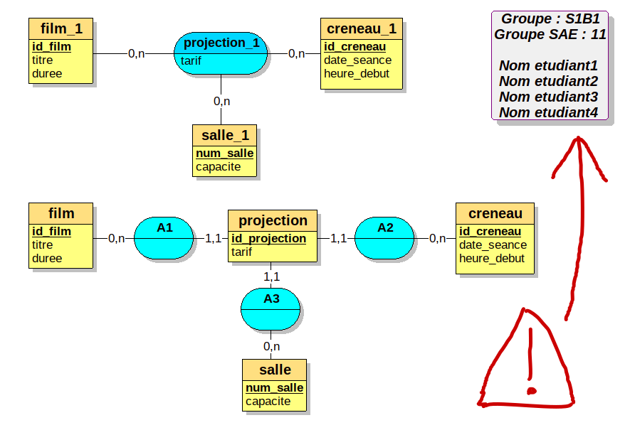
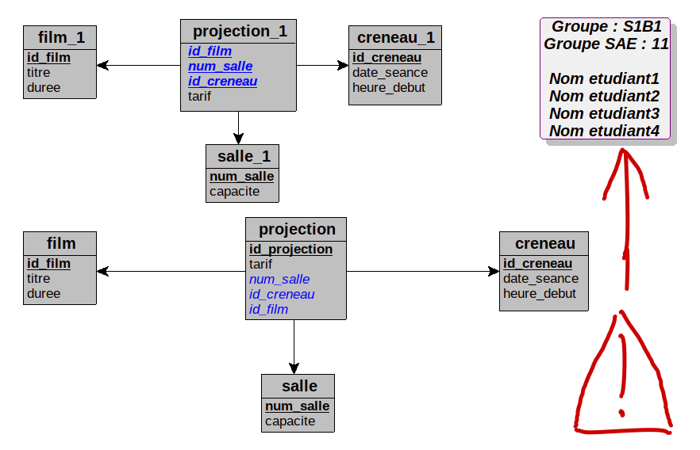

Formation des groupes de projet avec un référent : groupe de
3/4 personnes dans chaque groupe de
TP
Créer un groupe et indiquer les membres dans ce
document (pour l’affectation des salles)
Affectation d’un sujet par l’enseignant : de 1 de
16
Il est possible de proposer une idée mais l’article doit pouvoir
se décliner (taille, couleur … différentes : l’article doit posséder une déclinaison ou une variation) sous réserve que ça ne ressemble pas
trop à un sujet existant.
Semaine 1 / 2 : livrable 1
prise en main du projet :
Base de données :
Créer un script SQL « sae_sql.sql » : ce script
contient une première version de la base de données du projet et un jeu
de test en fonction de votre projet
Créer des enregistrements pour les articles (15 minimum)
Rechercher des images (photos) pour ces différents articles (15
photos différentes minimum, ne pas avoir la même photo pour
plusieurs articles)
Copier le système d’authentification vu en TD de
BDD et afficher les articles de votre sujet (photos …)
Créer un compte pythonanywhere pour le projet de votre
SAE
télécharger le fichier livrable1_sae_2_4_bdd.ods
déposer sur moodle ce fichier livrable1_sae_2_4_bdd.ods
avec les informations sur le groupe de SAE et l’URL de votre projet
pythonanywhere
livrable 1 :
Modifier le fichier livrable1_sae_2_4_bdd.ods
avec à l’intérieur l’URL de votre projet sur l’hébergeur
pythonanywhere : (voir les consignes ci-dessus) et les
informations sur le groupe de SAE
Créer un fichier mcd_projet_v1.loo avec la
première version du MCD du projet ; Ce MCD est
composé de toutes les entités et associations nécéssaires au
fonctionnement de la version minimum du site de e-commerce, le MLD issu
de ce MCD est composé des tables de votre sujet et des tables
“utilisateur”, “commande”, “ligne_commande”, “ligne_panier” et
“etat”.
Créer 2 fichiers PDF d’une page de nom
MCD_v1.pdf et MLD_v1.pdf
MCD_v1.pdf : il est composé du MCD, le MCD qui
utilise complètement et harmonieusement la page, ajouter sur cette page
vos noms, votre groupe de TP (exemple A2) et votre groupe de SAE
MLD_v1.pdf : il est composé du MLD, le MLD qui
utilise complètement et harmonieusement la page, ajouter sur cette page
vos noms, votre groupe de TP (exemple A2) et votre groupe de SAE
ATTENTION malus si il n’y a ni le
groupe ni le nom des étudiants sur le MCD et le MLD, ou si le nom des
fichiers PDF n’est pas correct
exemple de modification :

exemple de fichier PDF (format A4) avec un MCD qui sera imprimé

exemple de fichier PDF (format A4) avec un MLD qui sera imprimé
Créer un fichier sae_sql.sql première version du
jeu de test SQL pour votre projet.
La qualité du jeu de test est
vraiment prise en compte, nombre de colonnes pour les articles, les
types d’articles, le nombre d’articles. Le tout devant ressembler à
quelque chose dans laquelle un client pourrait se projeter. (Minimum 15
articles et 4 types d’articles (15 photos différentes minimum, pas de
photos identiques pour un article sinon malus, les photos doivent être
réalistes et attractives))
Application Flask
La route /base/init fonctionne
(contrôleur fixtures_load.py). Cette fonction supprime puis
crée toutes les tables et insert les enregistrements dans la base de
données.
Créer un compte Sur l’hébergeur pythonanywhere et
héberger votre application.
Votre application doit permettre :
de s’authentifier avec le code vu en TD (le mot de passe pour le
login “client” est “client”, pour “client2” est “client2” et pour
“admin” est “admin”)
l’application doit afficher le jeu de test :
les “articles” de votre projet (dans la base de
données, vous ne devez pas utiliser le mot “article”)
les “types d’articles” qui seront utilisé par le
filtre (le filtre n’est pas évalué dans ce livrable)
Créer un compte github ou gitlab, synchroniser
votre projet entre votre machine et le dépot (repository), utiliser
dotenv (voir la fin du document sur pycharm)
Par convention le code SQL est en snake_case (sinon pénalité et vous devrez changer
vos scripts SQL pour les prochains livrables)
Toutes les clés étrangères sont nommées
avec le format suivant : table_id (table est le
nom de la table dont la clé primaire permet de vérifier l’intégrité
référentielle de la colonne)(sinon pénalité et vous devrez
changer vos scripts SQL pour les prochains
livrables)
Remplacer le nom de la table article par celui de
votre sujet.
Créer la table qui permettra de définir la déclinaison de
l’article
Remplacer l’attribut article_id par celui de votre
sujet dans le schéma ci-dessus.
Créer une table type_article (en modifiant le nom par celui du
sujet)
Ajouter des attributs dans la table principale
L’état de la commande peut être selon le sujet, “en attente”,
“expédié”, “validé”, “confirmé”
Le système doit disposer d’un système de panier stocké dans une base
de données avant la confirmation de la commande (et non en
“session”)
Rechercher les clés primaires dans le schéma
ci-dessus.
Modifier le schéma avec les éléments de votre sujet en vous
inspirant d’exemples sur internet
Même si l’objectif n’est pas de passer
du temps sur les interfaces, vous pouvez modifier et améliorer les
interfaces (un tout petit bonus sur la note peut être appliqué en
fonction de la qualité des modifications)
Affectation des sujets :
IMPORTANT : Derrière le numéro du sujet, respecter :
le nom de la première table (qui remplace article)
ainsi que le nom de la déclinaison en
violet (à remplacer par le nom derrière /)
et le type d’article (catégorie)
pour le filtre en vert
Livrable 2 : Ce livrable est composé
d’un fichier archive (.zip ou
.tar.gz) qui contient le dossier de votre projet (ne pas oublier le
fichier SQL (jeu de test) qui est dans le même dossier que le fichier
app.py)
Il devrait être possible de tester votre application sur l’hébergeur
pythonanywhere
structure minimum du site de e-commerce fonctionnelle
frontOffice : formulaire de commandes (clients )
affichage du panier et des articles (sur la même vue), prix total du
panier …
ajout dans un panier des articles (lien) : formulaire (vérifier que
le panier est différent pour 2 clients)
supprimer des articles du panier : formulaire
l’ajout dans le panier d’un article qui est déjà dans le panier
modifie la quantité de articles
la validation du panier génère une commande (interface pour
confirmer/vider le panier/continuer les achats)
affichage des commandes et du prix total de chaque commande
filtrer les articles par type du coté client
(catégorie à l’aide de liens , ou d’une liste déroulante, de case à
cocher …), utiliser une session pour stocker ce filtre coté
serveur.
le client peut voir dans son espace que la commande est prise en
compte (réalisée) et le client peut afficher le détail de ses
commandes
Affichage du stock d’un article (ajouter l’attribut
“stock” dans votre table équivalente à “article”)
Gestion du stock, il n’est pas possible de
commander un article qui n’est pas en stock
backOffice : gestion des commandes (vendeur)
le vendeur peut afficher toutes les commandes et les valider (le
client peut visualiser que la commande a été traitée )
le vendeur peut afficher le détail d’une commande (articles, prix,
quantité + nom du client et informations sur le client)
le vendeur peut modifier le stock d’un article
le fichier SQL sae_sql.sql qui permet de faire
fonctionner votre partie python (ne pas joindre plusieurs fichiers SQL
dans votre projet)
Un petit bonus est donné à ceux qui ont une à deux semaine d’avance
dans leur rendu et leur présentation.
Lors des SAE vous définirez et vous m’informerez de la partie de
chaque étudiant dans le groupe
tâche par étudiant (1 tâche par étudiant)
modifier le modèle logique de données de façon à ce que votre
application puisse réaliser une des tâches suivantes
étudiant 1 : gestion du stock pour des articles
ou services de déclinaison différente (propriété comme taille,
couleur)
Le stock dépend au minimum d’une des propriétés d’un article
(couleur et/ou taille). Si l’article existe en plusieurs propriétés
différentes le stock total des déclinaisons est affiché dans la page
principale (une déclinaison ou variation)
Boutique du
client ( front-office : boutique du client, vue
pour faire les commandes )
Affichage du nombre de déclinaison(s) des articles qui en possèdent
plusieurs dans la boutique (front-office :vue pour
faire les commandes) ; faire ce calcul dans une requête SQL pour
extraire les données (sans boucle en python pour ajouter des
données).
Affichage du stock restant avec une ou plusieurs déclinaisons de
l’article (dans le front-office : boutique du
client)
Lors de l’ajout d’un article dans le panier, le client passe par une
interface supplémentaire pour saisir la propriété (choisir la
déclinaison) sauf si il n’y a qu’une seule déclinaison (propriété) pour
un article. La quantité de chaque déclinaison est affichée dans cette
interface.
Le stock se décrémente lorsque l’on ajoute un/des articles dans le
panier, la suppression d’articles du panier re-incrémente le stock avec
une ou plusieurs déclinaisons de l’article.
Affichage du prix total de la commande en cours (panier) en tenant
compte des déclinaisons.
Affichage de la(les) déclinaison(s) dans le panier (propriété :
taille, couleur …) de l’article choisi si il y en a plusieurs
possibles.
Commande : affichage du prix total des commandes, du nombre
d’articles.
Lors de l’affichage du détail d’une commande : affichage du nom de
l’article, du nombre d’articles, du prix unitaire et du prix total de
cet (ces) article(s) mais surtout de la déclinaison si il y en a
une.
Interface
Administrateur ( bask-office )
(ADMIN) Pour l’administrateur : Interface pour consulter toutes les
commandes, valider les commandes, consulter le détail des commandes avec
la déclinaison des articles
(ADMIN) Pour l’administrateur : Interface qui affiche un
tableau avec les articles (nom, identifiant), le nombre de
déclinaisons, le stock restant de chaque article ; mettre en
valeur les articles à ré-approvisionner : un message s’affiche si une
déclinaison est en rupture de stock (=0). Ce tableau dispose de
bouton de modifier, ajouter voir supprimer le stock des articles. Si un
article a été commandé, il n’est plus possible de le supprimer.
(ADMIN) Interface pour compléter le stock des articles en fonction
de la déclinaison (taille, couleur …).
(ADMIN) Interface pour ajouter/modifier/supprimer de nouvelle
déclinaison.
(ADMIN) Gestion de 2 déclinaisons . Chaque déclinaison possède 2
propriétés différentes.
(ADMIN) Gestion de la “taille unique” ou “couleur unique”, lors de
la sélection de cette propriété, il n’est plus possible d’en
sélectionner une autre. Cette propriété n’est pas proposée dans la liste
déroulante si une autre déclinaison a déjà été sélectionnée.
(ADMIN) Pour les plus à l’aise : Gestion de la
suppression/modification de déclinaisons déjà commandés : Si on supprime
ou on modifie un article une déclinaison déjà achetée on fait une copie
et qui devient “non utilisable” de la déclinaison, et on crée une
nouvelle déclinaison. (la facture du produit acheté doit rester
identique).
Interface
Administrateur, visualisation de données (
bask-office )
VISUALISATION de données sur les stocks pour l’administrateur
coût du stock par déclinaison(taille, couleur)
nombre d’article en stock par déclinaison(taille, couleur) …. )
Attention à la qualité du jeu de test pour cette partie.
Remarque : pour simplifier le problème, lorsque
l’identifiant de la taille ou la couleur (ou autre déclinaison) est “1”,
la taille ou la couleur est considérée comme ‘unique’
étudiant 2 : gestion des commentaires et des
notes
Boutique du
client ( front-office : boutique du client, vue
pour faire les commandes )
Afficher le nombre de commentaires (avis) et la
note moyenne (uniquement si ces données existent sinon ne rien afficher)
pour chaque article ; faire ce calcul dans une requête SQL pour extraire
les données (sans boucle en python pour ajouter des données).
Détails d’un Article pour le client (vue pour saisir
les commentaires) :
Seule un client qui a acheté un article peut donner un avis
dessus (ajouter des commentaires) ou mettre une note.
Les commentaires sont liés à l’utilisateur (afficher le pseudo de
chaque utilisateur devant chaque commentaire ainsi que l’identifiant du
commentaire (id)). L’utilisateur peut ajouter et supprimer uniquement
ses commentaires mais l’édition pour les modifier n’est pas obligatoire
; afficher le login ou pseudo de l’utilisateur avant le
commentaire.
L’utilisateur ne peut saisir que 3 commentaires (quota) par
article (faire la vérification coté serveur, faire le
calcul grâce à du SQL, un message flash ( très visible ) s’affiche
lorsque ce quota est atteint)
Afficher (dans la vue qui affiche le détail d’un article en
cliquant dessus)
le nombre de commentaire(s) de l’utilisateur
le nombre de commentaire(s) total pour l’article
le nombre de commentaire(s) total validé(s)
le nombre de commentaire(s) de l’utilisateur validé(s) =>
faire ce calcul en SQL avec 1 requête dans le contrôleur pour toutes les
valeurs ci-dessus
l’utilisateur ne peut saisir que une note par article ou la
modifier
Afficher la note moyenne de l’article en tenant compte des autres
notes (les notes des autres clients) ; faire le calcul grâce à du
SQL.
Afficher dans un ordre chronologique (temporel inverse) les
commentaires des clients et insérer correctement les réponses de
l’administrateur derrière un commentaire.
Interface
Administrateur ( bask-office )
(ADMIN) Liste des articles : l’administrateur peut
voir si il y a de nouveaux commentaires sur un article dans la liste des
articles et leurs nombres.
(ADMIN) Liste des articles : afficher le nombre de
commentaires total et le nombre de commentaires “validés”(lus) des
clients.
(ADMIN) Liste des commentaires : l’administrateur
peut voir si il y a de nouveaux commentaires parmi tous les commentaires
d’un article (l’administrateur peut distinguer les commentaires
“validés” (lus sur fond jaune) et les commentaires “non”validés” (sur
fond blanc) ; les réponses de l’administrateur (sur fond vert).
(ADMIN) L’administrateur peut répondre à un commentaire.
(ADMIN) liste des commentaires : l’administrateur
peut supprimer certains avis (commentaires) (dans la liste des
commentaires)
(ADMIN) L’administrateur peut “valider” des commentaires (“valider”
permet d’indiquer que les commentaires ont été lus par
l’administrateur.
(ADMIN) Affichage liste des commentaires : les
commentaires sont correctement ordonnés :
afficher en premier les commentaires non “validés” (non lus) des
clients dans un ordre chronologique temporel inverse (descendant) : sur
fond blanc.
puis les commentaires validés (lus) dans un ordre chronologique
(temporel inverse) : sur fond jaune.
La réponse de l’administrateur se trouve sous le commentaire du
client : insérer correctement les réponses de l’administrateur derrière
un commentaire : sur fond vert.
Interface
Administrateur, visualisation de données (
bask-office )
Rappel : la catégorie ou le type d’article sont les valeurs dans le
filtre
VISUALISATION de données sur les commentaires pour les catégories
(ou type d’article) :
tableau avec le nombre de notes, la note moyenne et le nombre de
commentaires dans chaque catégorie du filtre (ou type d’article du
filtre)
graphique avec la note moyenne/catégorie d’article du filtre (ou
type d’article)
graphique avec le nombre de commentaires(s) par catégorie du
filtre(ou type d’article)
graphique avec le nombre de note(s) par catégorie du filtre (ou type
d’article)
VISUALISATION de données : interface plus évoluée
si on clique sur une catégorie (ou type d’article) ou on sélectionne
une catégorie dans une liste déroulante
afficher dans la page
tableau avec le nombre de notes, la note moyenne et le nombre de
commentaires uniquement pour chaque article de cette
catégorie (ou type d’article)
graphique avec la note moyenne/article uniquement
pour chaque article de cette catégorie (ou type d’article)
graphique avec le nombre de commentaires(s) par article
uniquement pour chaque article de cette catégorie
graphique avec le nombre de note(s) par article
uniquement pour chaque article de cette catégorie
Attention à la qualité du jeu de test pour cette partie.
étudiant 3 : gestion des adresses d’expédition
et de livraison
Lors de la création d’une commande : le client doit sélectionner une
adresse pour passer une commande (par défaut, c’est l’adresse
favorite qui est proposée, sinon il faut soit créer une adresse
soit sélectionner une adresse dans la liste des adresses valides)
Boutique du
client ( front-office : boutique du client, vue
pour faire les commandes )
Afficher dans “mes coordonnées” un tableau d’adresse.
Dans ce tableau, afficher clairement l’adresse
favorite (en bleu),
Dans ce tableau, afficher clairement les adresses non
valides seront en jaune (ce sont des adresses qui ont été
modifiées ou supprimées mais qui étaient déjà utilisées dans une
commande, de fait elles ne sont plus utilisables)
Le nombre de commandes par adresse est indiqué dans
le tableau des adresses.
Afficher le nombre d’adresses de l’utilisateur
“valides” (utilisables) et le nombre d’adresses
total de l’utilisateur
L’utilisateur peut utiliser et créer au maximum 4 adresses
“fonctionnelles” (valides), il peut les modifier (la vérification est
faite coté serveur (en SQL) et un message “flash” s’affiche lorsque le
maximum de 4 adresses valides est atteint)
Gestion de l’adresse favorite
Si l’utilisateur crée une adresse, cette adresse devient adresse
“favorite” sinon c’est la dernière utilisée qui est “favorite”.
Sinon si le client passe une commande, c’est l’adresse de livraison
utilisée qui devient favorite
Sinon si on modifie l’adresse favorite, l’adresse modifiée devient
l’adresse favorite
Sinon si on supprime l’adresse favorite, c’est la dernière adresse
utilisée valide qui devient favorite (“date de commande la plus récente
et adresse valide”)
le client peut consulter ses commandes avec les adresses de
livraison et facturation.
si l’adresse de facturation est la même que l’adresse de
livraison, indiquer à l’utilisateur que ce sont les mêmes
adresses
Le client peut faire l’ajout/la modification/la suppression d’une
adresse.
Vérifier coté serveur (avec du SQL) que l’utilisateur connecté
possède bien cette adresse lors de l’ajout/modification/suppression
d’une adresse, indiquer par un message flash très visible orange le
problème.
Gestion avancée de la suppression/modification d’adresses :
Conserver uniquement les adresses utilisées dans les commandes
(factures) même si on modifie ou supprime l’une de ces adresses
Une adresse non utilisé dans une commande doit être modifiée ou
supprimée dans la base de données sans générer d’adresse non
valide.
Gestion d’une adresse supprimée utilisée dans une
commande. Elle ne peut pas être supprimée de la base de données mais
devient non “valide”. De fait cette adresse n’est plus utilisable et
n’est plus comptée dans les adresses utilisables.
Gestion de la modification d’une adresse. Une
adresse utilisée pour une commande ne peut pas être modifiée, si on
modifie cette adresse, elle devient non “valide”. De fait cette adresse
n’est plus utilisable et n’est plus comptée dans les adresses
utilisables. Cependant un doublon (une nouvelle adresse) est créée avec
les nouvelles informations.
Vérifier que le code postal est composé de 5 chiffres côté
serveur, afficher un message flash qui signale l’erreur si le code
postal n’est pas composé de 5 chiffre lors de la création d’une adresse
; les données saisies sont ré-affichées dans le formulaire en cas
d’erreur (faire la vérification coté serveur avec du python ou du
SQL)
Interface pour ajouter/modifier les informations de l’utilisateur
(nom, login, email).
Pas de doublon possible avec l’email et le login.
Mettre à jour les valeurs de connexion (session).
Interface
Administrateur ( bask-office )
(ADMIN) si l’administrateur consulte une commande, il peut voir
l’adresse d’expédition et l’adresse de facturation
Interface Administrateur,
visualisation de données ( bask-office )
Attention à la qualité du jeu de test pour cette partie.
VISUALISATION de données avec les adresses (utiliser les 2 chiffres
de gauches du code postal )
tableau avec le nombre de vente(s), le chiffre d’affaire par
département
graphique avec le nombre de vente par département
graphique avec le chiffre d’affaire par département
VISUALISATION de données : interface plus évoluée
affichage d’une carte avec le nombre de vente par département
ou le CA par département ; la sélection du choix est faite par un lien :
on clique sur “Chiffre d’affaire” ou “nombre de commandes”
Attention à la qualité du jeu de test pour cette partie.
étudiant 4 (uniquement pour les groupes de 4) :
gestion d’une liste d’envies(wishlist) et historique des articles
consultés
Boutique du
client ( front-office : boutique du client, vue
pour faire les commandes )
Difficulté 1 : La liste d’envie est
composée par les articles sélectionnés par le “💛”
Ajout/suppression des articles dans la wishlist en cliquant sur
“💛”
Si l’article est commandé, il est retiré de cette liste
(“wishlist”) dans la base de données.
L’affichage des articles dans la liste d’envie
est décroissant et dépend de l’ordre d’ajout (date et heure)
Affichage du nombre d’article(s) dans la liste
d’envie (“wishlist”) et du nombre d’article(s) dans
l’historique d’un client. Utiliser du SQL pour faire ce
calcul.
Pouvoir avec l’interface fournie, monter/descendre les articles
dans la “wishlist” dans cette liste
monter/descendre d’un niveau
monter/descendre au premier/dernier rang
Uniquement si on clique sur l’article, afficher en vert au dessus
de la liste le nombre de client(s) autre que vous qui ont ajouté cet
article dans leur wishlist sinon afficher “Vous êtes le seul à avoir cet
article dans votre wishlist” ; Utiliser du SQL pour faire ce
calcul.
Uniquement si on clique sur l’article, afficher en bleu au dessus
de la liste le nombre d’article(s) autre(s) que celui là que vous avez
déjà dans votre wishlist et qui sont de la même catégorie que cet
article (ou type d’article) ; Utiliser du SQL pour faire ce
calcul.
rappel : la catégorie ou le type d’article sont les valeurs dans le
filtre
Difficulté 2 : l’historique est
défini par les articles consultés (on clique sur la photo de
l’article)
affichage de l’historique dans l’ordre de
consultation
L’historique n’est composé que de 6
articles différents maximum (on ne stocke que 6 articles au
maximum dans la table “historique” de la base de données), les 6
derniers consultés. (faire ce calcul en SQL dans le contrôleur )
Le nombre de consultations d’un article est stocké dans un
numérique.
Les articles des historiques sont retirés au bout de 1 mois.
Pas de doublon dans l’historique
Interface
Administrateur, visualisation de données (
bask-office )
VISUALISATION de données sur les listes d’envies
pour l’administrateur (nombre d’articles /catégorie ) dans la liste
d’envies, nombre de clics (consultation) d’un article ….)
VISUALISATION de données sur les wishlist pour les catégories (ou
types d’article) :
tableau avec le nombre d’articles dans une wishlist dans chaque
catégorie.
graphique avec le nombre d’articles dans une wishlist /catégorie
d’articles.
graphique avec le nombre d’articles dans un historique sur le mois
/catégorie d’articles.
VISUALISATION de données : interface plus évoluée
si on clique sur une catégorie ou on sélectionne une catégorie dans
une liste déroulante
afficher dans la page
tableau des articles dans une wishlist d’une catégorie, le nombre
d’articles dans un historique sur le mois uniquement pour chaque
article de cette catégorie
graphique avec le nombre d’articles dans une wishlist
uniquement pour chaque article de cette catégorie
graphique avec le nombre d’articles dans un historique sur le mois
uniquement pour chaque article de cette catégorie
Attention à la qualité du jeu de test pour cette partie.
Chaque étudiant doit réaliser une(des) requêtes sur les données de sa
partie, et réaliser un graphique (dataviz) qui serait un support
de décision, la qualité du jeu de test
livré est prise en compte.
Livrable 3 (oral en TP):
Zoom sur les modifications dans le MCD et dans le MR,
explications
Réaliser le code python et SQL dans les contrôleurs,
(éventuellement modifier les vues) …. pour que votre partie soit
fonctionnelle.
Réaliser une vue avec un graphique sur des données de
l’application qui serait un support de décision si
possible en rapport avec votre partie (exemple étudiant 3 : nombre de
clients par départements, régions ou Chiffre d’affaire par
région/département)
Présentation de chaque partie en TP et durant les heures de
SAE
Il n’est pas nécessaire que toutes les parties fonctionnent
ensemble, il n’est pas nécessaire de mettre l’application sur
l’hébergeur pythonanywhere ; validation : oral de 5/10mn en TP
devant une machine de l’IUT
Déposer votre code source sur moodle
Pour le dernier livrable, la date de rendu est
prise en compte. Une petite partie de la note prend en compte que le
travail est été fait quelques jours avant la deadline
(date limite) et si la présentation a été effectué avant ou après la
deadline (date limite)
Autre évaluation : note anglais
oral anglais (voir avec Mme Couturier)
idée
sur des coefficients des évaluations et livrables (approximatif) en
2022